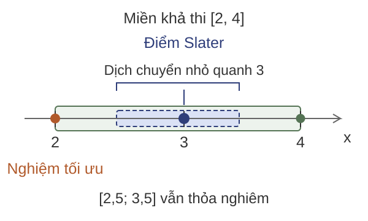
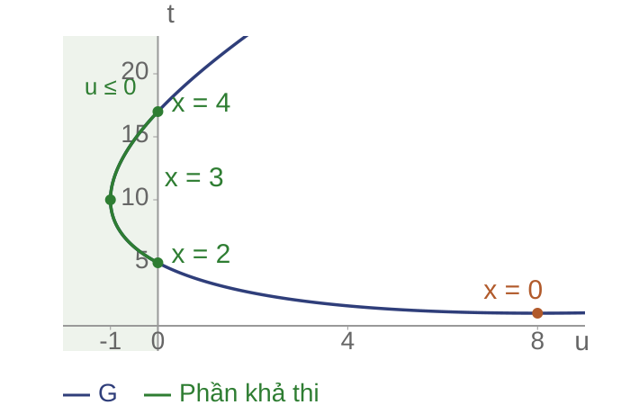

Hàm và bài toán đối ngẫu Lagrange
Bài toán cực tiểu có ràng buộc: tìm giá trị nhỏ nhất của hàm mục tiêu trong các điểm thỏa ràng buộc.
Một điểm thỏa mọi ràng buộc được gọi là điểm khả thi.
Tìm được một điểm khả thi chưa đủ để kết luận đó là nghiệm tối ưu.
Đối ngẫu Lagrange tạo cận dưới cho giá trị tối ưu. Nếu cận này bằng giá trị mục tiêu tại một điểm khả thi, điểm đó là nghiệm tối ưu.
Ví dụ tối ưu có ràng buộc
Bài toán: Tìm số thực $x$ để $x^2+1$ nhỏ nhất, với $2\le x\le4$.
![Hàm mục tiêu trên đoạn khả thi [2,4], cực tiểu tại (2,5).](img/lec-03/intro-feasible.svg)
Hàm mục tiêu: $f_0(x)=x^2+1$.
Viết ràng buộc dưới dạng:
$$f_1(x)=(x-2)(x-4)\le0$$
Miền khả thi: $[2,4]$.
Nghiệm tối ưu: $x^*=2$.
Giá trị tối ưu: $p^*=5$.
Họ hàm tạo cận dưới

Với $\lambda\ge0$, đặt $L=f_0+\lambda f_1$.
Trên miền khả thi: $L\le f_0$.
Chọn $\lambda=1$:
$$L(x,1)=2(x-1{,}5)^2+4{,}5$$
$f_0(x)\ge4{,}5$ với mọi $x$ khả thi.
Hàm Lagrange
$x\in\mathbb R^n$, $f_i:\mathbb R^n\to\mathbb R$ ($i=0,\ldots,m$).
Bài toán gốc: $\min f_0(x)$, với $f_i(x)\le0$, $Ax=b$.
Định nghĩa.
$$L(x,\lambda,\nu)=f_0(x)+\sum_{i=1}^m\lambda_i f_i(x)+\nu^T(Ax-b)$$
$\lambda\in\mathbb R^m$, $\lambda\ge0$; $\nu\in\mathbb R^r$ tự do.
Hàm đối ngẫu
Định nghĩa. Giữ nhân tử cố định, lấy cận dưới theo $x$:
$$g(\lambda,\nu)=\inf_{x\in\mathbb R^n}L(x,\lambda,\nu)$$
- $\inf$: cận dưới lớn nhất; có thể không đạt.
- Không áp lại các ràng buộc của bài toán gốc.
- $g$ có thể bằng $-\infty$.
Tính lõm của hàm đối ngẫu
Mệnh đề. $g$ lõm theo nhân tử, kể cả khi bài toán gốc không lồi.
Đặt $\theta=(\lambda,\nu)$. Chọn $\theta_a,\theta_b$ có $g$ hữu hạn, $0\le\alpha\le1$.
$$\theta_\alpha=\alpha\theta_a+(1-\alpha)\theta_b.$$
Chứng minh. Với mỗi $x$ cố định, $L$ affine theo $\theta$, nên
$$\begin{aligned}L(x,\theta_\alpha)&=\alpha L(x,\theta_a)+(1-\alpha)L(x,\theta_b)\\&\ge\alpha g(\theta_a)+(1-\alpha)g(\theta_b).\end{aligned}$$
Lấy $\inf_x$; vế phải không phụ thuộc $x$:
$$g(\theta_\alpha)\ge\alpha g(\theta_a)+(1-\alpha)g(\theta_b).$$
Lập hàm Lagrange
Bài toán: $\min_{x\in\mathbb R}(x^2+1)$, với $(x-2)(x-4)\le0$.
Với $\lambda\ge0$, thay $f_0$ và $f_1$ vào $L=f_0+\lambda f_1$:
$$\begin{aligned}L(x,\lambda)&=x^2+1+\lambda(x-2)(x-4)\\&=x^2+1+\lambda(x^2-6x+8)\\&=(1+\lambda)x^2-6\lambda x+1+8\lambda.\end{aligned}$$
Giữ $\lambda$ cố định, tìm giá trị nhỏ nhất của $L$ theo $x\in\mathbb R$ để tính $g(\lambda)$.
Tính hàm đối ngẫu
Bài toán: $\min_{x\in\mathbb R}(x^2+1)$, với $(x-2)(x-4)\le0$; $\lambda\ge0$.
Hoàn thành bình phương bằng cách thêm rồi bớt cùng một hạng:
$$\begin{aligned}L(x,\lambda)&=(1+\lambda)\left[x^2-\frac{6\lambda}{1+\lambda}x+\left(\frac{3\lambda}{1+\lambda}\right)^2-\left(\frac{3\lambda}{1+\lambda}\right)^2\right]+1+8\lambda\\&=(1+\lambda)\left(x-\frac{3\lambda}{1+\lambda}\right)^2+1+8\lambda-\frac{9\lambda^2}{1+\lambda}.\end{aligned}$$
Vì $1+\lambda>0$, cực tiểu tại $x(\lambda)=\frac{3\lambda}{1+\lambda}$.
$$g(\lambda)=1+8\lambda-\frac{9\lambda^2}{1+\lambda}=10-\lambda-\frac9{1+\lambda}$$
Đối ngẫu yếu
Định lý. Với $x$ khả thi và $\lambda\ge0$:
$$g(\lambda,\nu)\ \le\ L(x,\lambda,\nu)\ \le\ f_0(x)$$
- Bất đẳng thức đầu: định nghĩa $\inf$.
- Bất đẳng thức sau: $\lambda_i f_i(x)\le0$, $Ax-b=0$.
Suy ra $g(\lambda,\nu)\le p^*$. Không cần tính lồi.
Bài toán đối ngẫu

Bài toán đối ngẫu: chọn cận dưới lớn nhất.
$$d^*=\sup_{\lambda\ge0,\,\nu}g(\lambda,\nu)\le p^*$$
Trong ví dụ: $g(0)=1$, $g(1)=4{,}5$, $g(2)=5$.
$g$ lõm theo nhân tử; $\sup$ có thể không đạt.
Ví dụ đối ngẫu hai chiều
Tìm $x=(x_1,x_2)\in\mathbb R^2$ có bình phương chuẩn nhỏ nhất:
$$\min_x\frac12(x_1^2+x_2^2)\quad\text{với }x_1\ge1,\;x_2\ge2.$$
Viết $f_1=1-x_1\le0$, $f_2=2-x_2\le0$; dùng $\lambda_1,\lambda_2\ge0$.
$$L=\frac12(x_1^2+x_2^2)+\lambda_1(1-x_1)+\lambda_2(2-x_2).$$
Giữ $\lambda$ cố định: $\partial L/\partial x_i=x_i-\lambda_i=0$, nên $x_i=\lambda_i$.
$$g(\lambda_1,\lambda_2)=\lambda_1+2\lambda_2-\frac12(\lambda_1^2+\lambda_2^2).$$
Giải đối ngẫu hai chiều
Với bài toán $\min\frac12(x_1^2+x_2^2)$, $x_1\ge1$, $x_2\ge2$:
$$\max_{\lambda_1,\lambda_2\ge0}\;g(\lambda_1,\lambda_2).$$
Hoàn thành bình phương:
$$g=\frac52-\frac12\left[(\lambda_1-1)^2+(\lambda_2-2)^2\right]\le\frac52.$$
Dấu bằng tại $\lambda^*=(1,2)$, thỏa dấu không âm.
Chọn $x=(1,2)$: khả thi và $f_0(x)=\frac12(1+4)=\frac52$.
Cận dưới bằng giá trị tại điểm khả thi: $x^*=(1,2)$, $d^*=p^*=\frac52$.
Bài tập xây dựng cận dưới
Câu hỏi: Xét $\min_{x\in\mathbb R}(x-2)^2$ với $x\le1$.
- Viết ràng buộc dạng $f_1(x)\le0$ và lập $L$.
- Tính $g(\lambda)$ với $\lambda\ge0$.
- Dùng $\lambda=2$ để chứng nhận nghiệm $x=1$.
Đối ngẫu mạnh và điều kiện Slater
Trong ví dụ: $g(1)=4{,}5$, còn $p^*=5$.
Cần phân biệt:
- Khoảng của một cặp: $f_0(x)-g(\lambda)$.
- Khoảng đối ngẫu tối ưu: $p^*-d^*$.
Nhiệm vụ: tìm điều kiện bảo đảm cận tốt nhất bằng giá trị tối ưu.
Cận khít trong ví dụ
Chọn $\lambda=2$:
$$L(x,2)=3(x-2)^2+5\ge5$$
Tại $x=2$ khả thi: $g(2)=f_0(2)=5$.
Định nghĩa. Đối ngẫu mạnh: $d^*=p^*$.
Ở đây, cả hai phía đều đạt nghiệm.
Ý nghĩa và trực quan của Slater
Bài toán: $\min_x(x^2+1)$, với $(x-3)^2-1\le0$, tức $x\in[2,4]$.

Slater yêu cầu một điểm có khoảng dư với mọi bất đẳng thức.
Quanh $\bar x=3$, dịch chuyển nhỏ vẫn thỏa nghiêm ràng buộc.
Nghiệm tối ưu $x^*=2$ vẫn có thể nằm trên biên.
Nếu có đẳng thức, chỉ dịch chuyển trong tập thỏa đúng các đẳng thức.
Điều kiện Slater
Giả thiết: $f_0,\ldots,f_m$ lồi, hữu hạn trên $\mathbb R^n$; đẳng thức $Ax=b$.
Slater: tồn tại cùng một điểm $\bar x$ sao cho
$$f_i(\bar x)<0\ (i=1,\ldots,m),\qquad A\bar x=b.$$
Định lý. Nếu $p^*$ hữu hạn: $d^*=p^*$ và đối ngẫu đạt nghiệm.
Điều kiện đủ; không bảo đảm nghiệm gốc tồn tại.
Chứng minh định lý Slater
Theo giả thiết vừa nêu; bỏ đẳng thức dư để $A$ đủ hạng hàng.
Đặt $f(x)=(f_1(x),\ldots,f_m(x))$.
1. Định lý tách hai tập lồi: các mức đạt được và các mức khả thi dưới $p^*$. Có $(a,\beta,\mu)\ne0$, $a\ge0$, $\mu\ge0$ sao cho
$$a^Tf(x)+\beta^T(Ax-b)+\mu f_0(x)\ge\mu p^*\quad\forall x.$$
2. Slater buộc $\mu>0$. Nếu $\mu=0$, thay $\bar x$ rồi xét mọi $x$:
$$a=0\ \Longrightarrow\ A^T\beta=0\ \Longrightarrow\ \beta=0\quad\text{(mâu thuẫn).}$$
3. Chuẩn hóa $\lambda=a/\mu$, $\nu=\beta/\mu$; lấy $\inf_x$ và dùng đối ngẫu yếu:
$$p^*\le g(\lambda,\nu)\le d^*\le p^*.$$
Kiểm tra điều kiện Slater
Ví dụ: $f_0=x^2+1$, $f_1=(x-3)^2-1$.
- $f_0^{\prime\prime}=f_1^{\prime\prime}=2>0$: hai hàm lồi.
- $\bar x=3$: $f_1(3)=-1<0$.
- $p^*=5$ hữu hạn: áp dụng định lý Slater.
Điểm Slater $\bar x=3$ khác nghiệm tối ưu $x^*=2$.
Giới hạn của điều kiện Slater
Ví dụ phản chứng. $\min x$ với $x^2\le 0$.
Miền khả thi $\{0\}$, $x^*=0$, $p^*=0$. Không có điểm $f_1<0$: không Slater.
$g(0)=-\infty$; với $\lambda>0$: $g(\lambda)=-\dfrac{1}{4\lambda}$.
$\sup g = 0$ nhưng không đạt.
Bài tập đối ngẫu mạnh và Slater
Câu hỏi: Xét $\min_{x\in\mathbb R^2}(x_1^2+x_2^2)$ với $x_1+x_2\ge1$.
- Đưa ràng buộc về dạng không dương.
- Tìm một điểm Slater và kiểm tra $p^*$ hữu hạn.
- Nêu các kết luận được bảo đảm.
So sánh chi phí tại $(1,1)$ và $(1/2,1/2)$.
Hình học của đối ngẫu
Ta đã tính cận dưới bằng đại số. Giờ cần nhìn nghiệm khả thi và cận dưới trong cùng một hình.
Ví dụ: $\min_x(x^2+1)$, với $(x-2)(x-4)\le0$.
Trục ngang: giá trị ràng buộc
$$u=f_1(x)=(x-2)(x-4)$$
$u\le0$: thỏa; $u>0$: vi phạm.
Trục dọc: giá trị mục tiêu
$$t=f_0(x)=x^2+1$$
$t$ càng nhỏ, chi phí càng thấp.
Ghi lại cặp $(u,t)$ vì hàm Lagrange dùng đúng hai giá trị này: $L=t+\lambda u$.
Điểm và tập giá trị
Mỗi $x$ tạo một điểm $(u,t)=(f_1(x),f_0(x))$; tất cả các điểm tạo thành $G$.

| $x$ | $u$ | $t$ |
|---|
| $0$ | $8$ | $1$ |
| $2$ | $0$ | $5$ |
| $3$ | $-1$ | $10$ |
| $4$ | $0$ | $17$ |
Chỉ phần của $G$ có $u\le0$ ứng với quyết định khả thi.
Hàm Lagrange trong mặt phẳng giá trị
Giữ $\lambda\ge0$ cố định. Trên mỗi điểm $(u,t)\in G$:
$$L(x,\lambda)=f_0(x)+\lambda f_1(x)=t+\lambda u.$$
Vì $g(\lambda)=\inf_x L(x,\lambda)$, ta có
$$t+\lambda u\ge g(\lambda)\quad\Longleftrightarrow\quad t\ge g(\lambda)-\lambda u.$$
Với độ dốc $-\lambda$, đường $t=g(\lambda)-\lambda u$ cao nhất mà vẫn nằm dưới toàn bộ $G$.
Trên phần khả thi: $t\ge g(\lambda)-\lambda u\ge g(\lambda)$.
Đường cận trong mặt phẳng giá trị

Chọn $\lambda=1$: $g(1)=4{,}5$.
Đường cận: $t=4{,}5-u$.
Điểm chạm ứng với $x=1{,}5$:
$$(u,t)=(1{,}25;3{,}25).$$
$u>0$: điểm chạm không khả thi.
Mọi điểm khả thi trên $G$ vẫn có $t\ge4{,}5$.
Tiếp xúc và đối ngẫu mạnh

Với $\lambda=2$, đường cận: $t=5-2u$.
Chạm tại $(u,t)=(0,5)$, ứng với $x=2$ khả thi.
$$t+2u-5=3(x-2)^2\ge0$$
$g(2)=f_0(2)=5$: cận khít.
Bài tập đọc hình đối ngẫu
Câu hỏi: Đường $t=4{,}5-u$ nằm dưới và chạm $G$ của ví dụ; một phương án khả thi có chi phí $5$.
- Đọc nhân tử $\lambda$ và giá trị $g(\lambda)$.
- Chặn trên sai số của phương án chi phí $5$.
- Có thể suy ra $p^*-d^*=0{,}5$ hay không?
Điều kiện Karush–Kuhn–Tucker (KKT)
Cần tìm nghiệm mà không tính tường minh $g$.
Khi hai phía tối ưu đều đạt và cận khít:
$$g(\lambda^*,\nu^*)=L(x^*,\lambda^*,\nu^*)=f_0(x^*)$$
- $x^*$ cực tiểu hóa $L$ theo $x$.
- $\lambda_i^*f_i(x^*)=0$ với từng ràng buộc.
Tại $x^*=2$: $f_0^{\prime}=4$, $\lambda^*f_1^{\prime}=-4$.
Ràng buộc hoạt động và bù trừ
Bù trừ: $\lambda_i^*f_i(x^*)=0$.
Không hoạt động
$f_i(x^*)<0$
Suy ra $\lambda_i^*=0$.
Hoạt động
$f_i(x^*)=0$
Nhân tử vẫn có thể bằng $0$.
Ví dụ $\min x^2$ với $x\le0$: $(x^*,\lambda^*)=(0,0)$.
Bốn nhóm điều kiện KKT
Định nghĩa. Các $f_i$ khả vi trên $\mathbb R^n$.
- Khả thi gốc: $f_i(x^*)\le0$, $Ax^*=b$.
- Khả thi đối ngẫu: $\lambda_i^*\ge0$.
- Bù trừ: $\lambda_i^*f_i(x^*)=0$.
- Dừng:
$$\nabla f_0(x^*)+\sum_{i=1}^m\lambda_i^*\nabla f_i(x^*)+A^T\nu^*=0$$
Giải ví dụ bằng KKT
$2x+\lambda(2x-6)=0$, $\lambda(x-2)(x-4)=0$.
| Trường hợp | Ứng viên $(x,\lambda)$ | Kiểm tra |
|---|
| $\lambda=0$ | $(0,0)$ | $f_1(0)=8>0$: loại |
| $x=2$ | $(2,2)$ | Thỏa cả bốn nhóm |
| $x=4$ | $(4,-4)$ | $\lambda<0$: loại |
Bộ hợp lệ: $(x^*,\lambda^*)=(2,2)$.
Điều kiện cần và điều kiện đủ
Trong lớp bài toán khả vi, đẳng thức affine:
Điều kiện đủ
Bài toán lồi + KKT
$\Rightarrow$ tối ưu toàn cục.
Không cần Slater.
Điều kiện cần
Bài toán lồi + Slater + nghiệm tối ưu tồn tại
$\Rightarrow$ tồn tại nhân tử thỏa KKT.
Phi lồi: KKT không đủ để kết luận tối ưu.
Nghiệm tối ưu không thỏa KKT
Ví dụ: $\min_{x\in\mathbb R}x$ với $x^2\le0$.
Chỉ $x=0$ khả thi, nên $x^*=0$ và $p^*=0$.
$$L(x,\lambda)=x+\lambda x^2,\qquad\lambda\ge0.$$
Điều kiện dừng tại nghiệm tối ưu:
$$1+2\lambda x^*=1\ne0\quad\text{với mọi }\lambda\ge0.$$
Bài toán lồi nhưng không thỏa Slater; ở ví dụ này, không có nhân tử KKT tại nghiệm tối ưu.
Chứng nhận tối ưu bằng KKT
Chứng minh tính đủ trong bài toán lồi.
- $\lambda^*\ge0$ nên $L(\cdot,\lambda^*,\nu^*)$ lồi.
- Dừng $\Rightarrow$ $x^*$ cực tiểu hóa $L$.
- Khả thi và bù trừ $\Rightarrow$ $L(x^*,\lambda^*,\nu^*)=f_0(x^*)$.
$$f_0(x^*)=g(\lambda^*,\nu^*)\le p^*\le f_0(x^*)$$
KKT trong hồi quy có ràng buộc
$X\in\mathbb R^{N\times d}$, $y\in\mathbb R^N$, $w\in\mathbb R^d$, $\tau>0$.
$$\min_w\frac12\|Xw-y\|_2^2\quad\text{với }\|w\|_2^2\le\tau$$
Lồi; điểm Slater $w=0$.
$$X^T(Xw-y)+2\lambda w=0$$
$$\lambda(\|w\|_2^2-\tau)=0,\qquad\lambda\ge0$$
Giải hệ KKT của hồi quy
Điều kiện dừng của hồi quy có ràng buộc $\|w\|_2^2\le\tau$:
$$X^T(Xw-y)+2\lambda w=0\quad\Longleftrightarrow\quad(X^TX+2\lambda I)w=X^Ty.$$
Gọi $w_0$ là nghiệm bình phương tối thiểu không ràng buộc có chuẩn nhỏ nhất.
Nếu $\|w_0\|_2^2\le\tau$: chọn $w^*=w_0$, $\lambda^*=0$.
Nếu $\|w_0\|_2^2>\tau$: cần $\lambda^*>0$ và
$$w(\lambda)=(X^TX+2\lambda I)^{-1}X^Ty,\qquad\|w(\lambda^*)\|_2^2=\tau.$$
Giải hệ theo $w$ với mỗi $\lambda>0$, rồi tìm một nhân tử để chuẩn đạt giới hạn.
Ví dụ hồi quy hai trọng số
Cho $X=I_2$, $y=(3,4)^T$, $\tau=1$:
$$\min_w\frac12\left[(w_1-3)^2+(w_2-4)^2\right]\quad\text{với }w_1^2+w_2^2\le1.$$
Nghiệm không ràng buộc $w_0=(3,4)^T$ có $\|w_0\|^2=25>1$.
$$\begin{aligned}(1+2\lambda)w&=(3,4)^T,\\\frac{25}{(1+2\lambda)^2}&=1\quad\Longrightarrow\quad\lambda^*=2.\end{aligned}$$
$w^*=(3/5,4/5)^T$, $\lambda^*=2$; mất mát tối ưu bằng $8$.
Bài tập kiểm tra nghiệm tối ưu
Câu hỏi: Xét $\min_{w\in\mathbb R}\frac12(w-3)^2$ với $w^2\le1$.
- Giải các trường hợp của điều kiện bù trừ.
- Kiểm tra đủ bốn nhóm KKT.
- Tính mất mát tối ưu và biện minh kết luận.